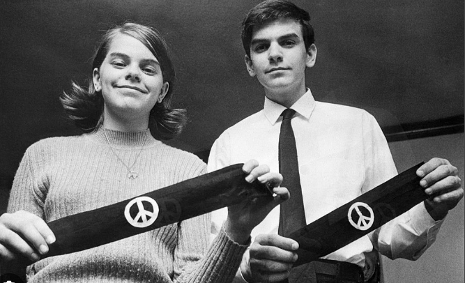
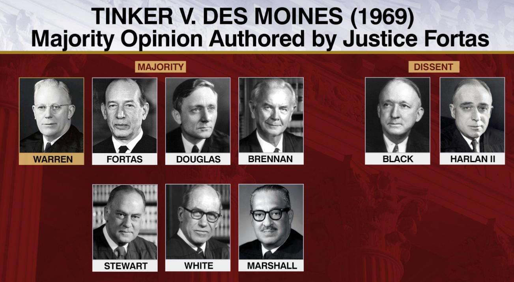

Tinker v. Des Moines (1969)
About
In December 1965, a group of students in Des Moines held a meeting in the home of 16-year-old Christopher Eckhardt to plan a public showing of their support for a truce in the Vietnam war. They decided to wear black armbands throughout the holiday season and to fast on December 16 and New Year's Eve. The principals of the Des Moines school learned of the plan and met on December 14 to create a policy that stated that any student wearing an armband would be asked to remove it, with refusal to do so resulting in suspension.
On December 16, Mary Beth Tinker and Christopher Eckhardt wore their armbands to school and were sent home. The following day, John Tinker did the same with the same result. The students did not return to school until after New Year's Day, the planned end of the protest.
Through their parents, the students sued the school district for violating the students' right of expression and sought an injunction to prevent the school district from disciplining the students. The district court dismissed the case and held that the school district's actions were reasonable to uphold school discipline. The U.S. Court of Appeals for the Eighth Circuit affirmed the decision without opinion.

| First Amendment |
|
Congress shall make no law respecting an establishment of religion, or prohibiting the free exercise thereof; or abridging the freedom of speech, or of the press; or the right of the people peaceably to assemble, and to petition the Government for a redress of grievances.
|
Decision and Reasoning
In a 7-2 decision, the Supreme Courts majority ruled that neither students nor teachers “shed their constitutional rights to freedom of speech or expression at the schoolhouse gate.” The Court took the position that school officials could not prohibit only on the suspicion that the speech might disrupt the learning environment.
The dissent argued that the First Amendment does not grant the right to express any opinion at any time. Students attend school to learn, not teach. The armbands were a distraction. School officials, acting on a legitimate interest in school order, should have broad authority to maintain a productive learning environment.

|